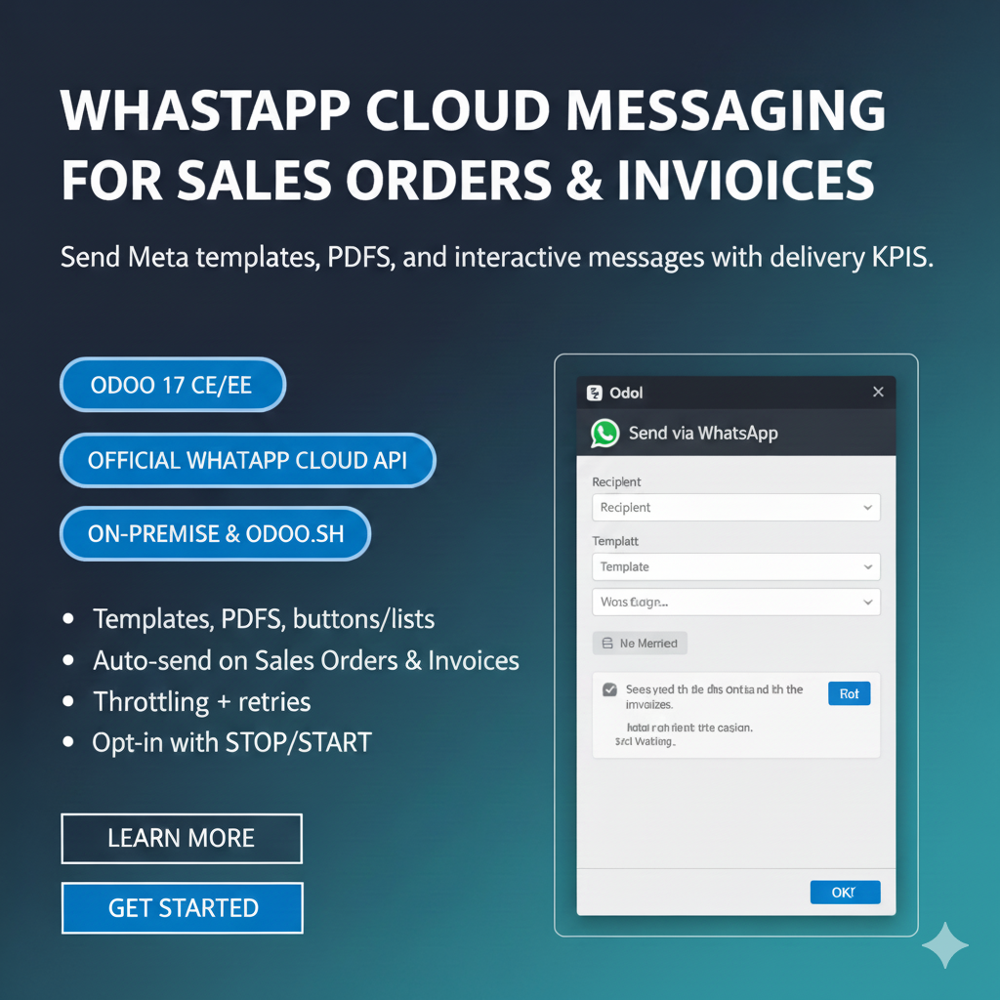
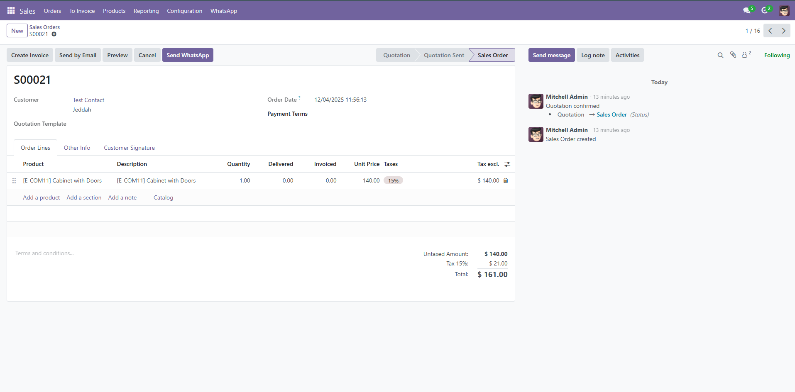
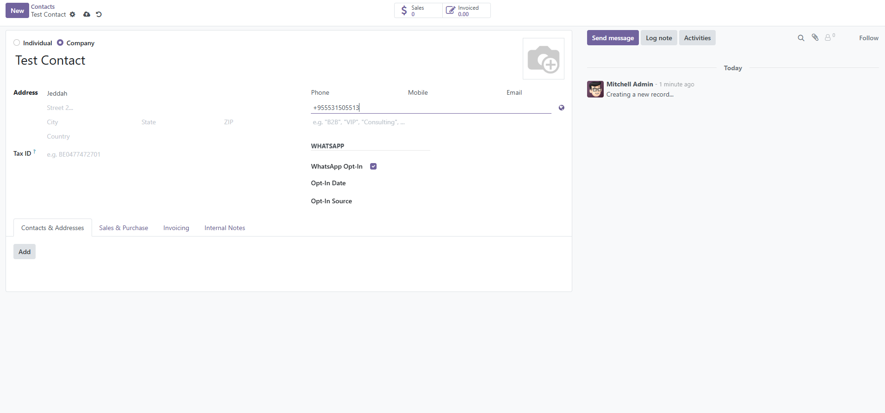
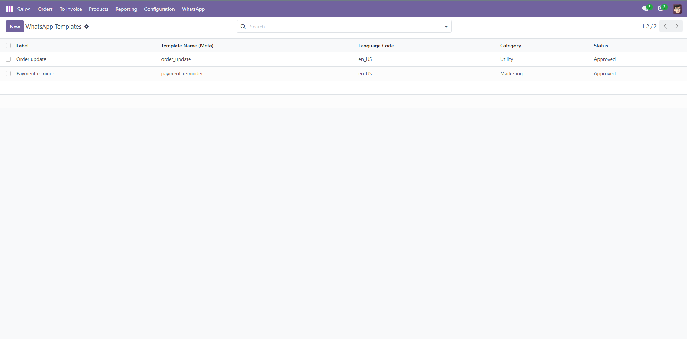
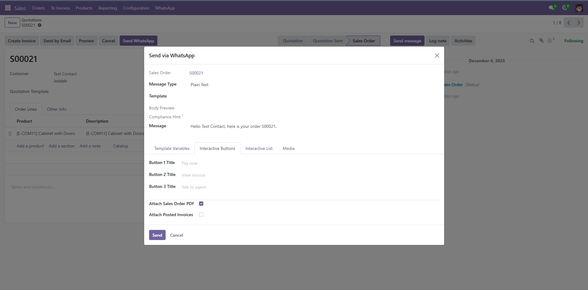
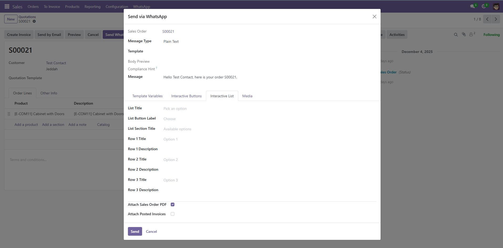
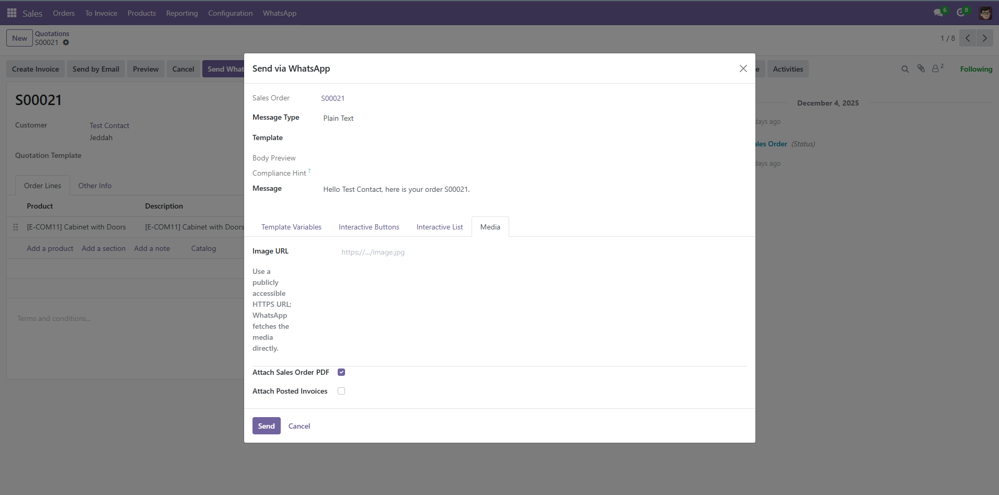

WhatsApp Cloud Messaging for Sales Orders & Invoices
Send Meta-approved templates, PDFs, and interactive messages from Sales Orders and posted invoices. Automate campaigns with throttling and retries, enforce opt-in compliance, and track delivery/read KPIs.
- Official WhatsApp Cloud API, no extra gateway.
- Interactive buttons/lists, images, and PDFs.
- Inbound logs with keyword opt-in/out (STOP/START).

Compatibility
Built to fit modern Odoo deployments and infrastructure.
Why teams choose it
Reliable automation with clear compliance and visibility.
Reliable sending
Queue-based campaigns with throttling, retries, and send windows.
Compliance ready
E.164 validation, opt-in enforcement, and keyword opt-in and opt-out.
Full visibility
Delivery and read logs, pivot KPIs, and chatter alerts on failures.
Highlights
Everything sales, accounting, and marketing teams need for compliant WhatsApp automation in Odoo.
Message types
- Text, templates, and images.
- PDF attachments for Sales Orders and posted invoices.
- Interactive buttons and lists.
Automation
- Auto-send on Sales Order confirmation and invoice post.
- Drip steps, send windows, throttling, retries.
- Campaigns for text, template, and image messages.
Compliance
- E.164 validation and opt-in enforcement.
- STOP/START keywords auto-update opt-in.
- Signature validation and app secret checks.
Inbox
- Conversation list by partner.
- Reply to inbound messages from Odoo.
- Threaded history per customer.
Template sync
- Pull approved templates from Meta.
- Auto-fill status, language, and variables.
- Keep Odoo aligned with WABA.
Observability
- Live logs for sent/delivered/read/failed.
- Pivot KPIs by campaign and partner.
- Webhook trace with keyword actions.
Use cases that convert
Keep customers informed without waiting for email or manual follow ups.
Sales order confirmations
Send order details and PDFs the moment an SO is approved.
Invoice reminders
Attach posted invoices and nudge customers with approved templates.
Delivery and status
Trigger logistics updates and keep buyers informed.
Lead follow-ups
Run campaigns from tags and segments with throttled sends.
How it works
Add token, phone number ID, verify token, and app secret in Settings.
Pull templates from Meta or create them with matching name and language.
Send manually or run automated campaigns.
Professional services
We help you deploy and customize end to end.
- Meta Business and webhook setup.
- Custom flows for payments, support, and logistics.
- Data normalization for opt-ins and phone cleanup.
- Performance tuning for large campaigns.

Live screens
Real configuration and flows from the module in Odoo.









Pricing
Simple and transparent licensing.
Free updates for 1 year · Unlimited users · Multi-company included · Meta conversation fees billed separately.
Email support included · SLA upgrade available · Optional customization services.
Results you can measure
Track sent/delivered/read/failure counts by campaign, order, or partner.
Errors post to chatter with activities for fast follow-up.
Incoming messages are logged and attached to partners or recent orders.
FAQ
What do I need from Meta?
A WhatsApp Business Cloud app, permanent token, phone number ID, verify token, and app secret.
Does it honor opt-in?
Yes. Non-opted partners are blocked and logged as failed.
Can I track delivery?
Yes. Sent, delivered, read, and failed statuses are in pivot views.
Is it multi-company?
Yes. Each company uses its own WhatsApp credentials.